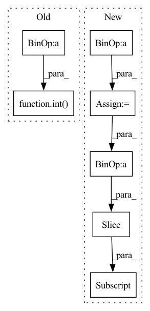

Pattern ID :30797

Before Change
if np.max(wav) > 1 or np.min(wav) < -1:
print("need to norm")
hop = int(window_size * stride)
slices = []
for end_idx in range(window_size, len(wav), hop):
start_idx = end_idx - window_size
slice_sig = wav[start_idx:end_idx]
After Change
else:
wav = librosa.resample(wav_pre, sr, sample_rate)
wav = wav/np.max(wav)
padding_len = hop - ((len(wav) - window_size) % hop)
wav = np.pad(wav, (0, padding_len), "constant")
slices = []
for start_idx in range(0, len(wav)-window_size+1, hop):
slice_sig = wav[start_idx:start_idx+window_size]
slices.append(slice_sig)
return slices
In pattern: SUPERPATTERN
Frequency: 3
Non-data size: 7
Instances
Fragment ID: 90715017
Project Name: nitin4525/speechenhancement
Commit Name: 2168d0c13d56b0e93d29fef666a8f7886bca04c8
Time: 2021-04-28
Author: 51083614+Nitin4525@users.noreply.github.com
File Name: data_preprocess.py
M Class Name: AnonimousClass
N Class Name: AnonimousClass
M Method Name: slice_signal(4)
N Method Name: slice_signal(4)
M Parent Class:
N Parent Class:
M File Name: data_preprocess.py
N File Name: data_preprocess.py
M Start Line: 11
M End Line: 25
N Start Line: 10
N End Line: 20
'>
Before Change
vec = torch.take(self.centroids[self.nbits], bins)
for i in range(self.num_hadamard):
vec = self.irht(vec, int(seed + (self.num_hadamard - 1) - i))
return (scale * vec)[:int(dim)].cpu().numpy()
After Change
for k in range(2, max(metadata.keys()) + 1, 2):
scale = metadata[k]
dim = int(metadata[k + 1])
vec.append(self.decompress_slice(bins[curr_index:curr_index + dim], scale, dim, seed))
curr_index += dim
vec = torch.cat(vec)
'>
Fragment ID: 90715051
Project Name: intel/openfl
Commit Name: c10577cb32201c45846d920f871e4bcab76e37ed
Time: 2023-01-13
Author: 30897761+yanivbi@users.noreply.github.com
File Name: openfl/pipelines/eden_pipeline.py
M Class Name: Eden
N Class Name: Eden
M Method Name: decompress(3)
N Method Name: decompress(5)
M Parent Class:
N Parent Class:
M File Name: openfl/pipelines/eden_pipeline.py
N File Name: openfl/pipelines/eden_pipeline.py
M Start Line: 252
M End Line: 260
N Start Line: 337
N End Line: 354
'>
Before Change
else:
wav = librosa.resample(wav_pre, sr, sample_rate)
wav = wav/np.max(wav)
hop = int(window_size * stride)
padding_len = window_size - len(wav) % window_size
wav = np.pad(wav, (0, padding_len+1), "constant")
slices = []
for end_idx in range(window_size, len(wav), hop):
After Change
wav = librosa.resample(wav_pre, sr, sample_rate)
wav = wav/np.max(wav)
src_length = len(wav)
padding_len = hop - ((len(wav) - window_size) % hop)
wav = np.pad(wav, (0, padding_len), "constant")
slices = []
for start_idx in range(0, len(wav)-window_size+1, hop):
slice_sig = wav[start_idx:start_idx+window_size]
slices.append(slice_sig)
return slices, src_length
'>
Fragment ID: 90715022
Project Name: nitin4525/speechenhancement
Commit Name: 2168d0c13d56b0e93d29fef666a8f7886bca04c8
Time: 2021-04-28
Author: 51083614+Nitin4525@users.noreply.github.com
File Name: test.py
M Class Name: AnonimousClass
N Class Name: AnonimousClass
M Method Name: slice_signal(4)
N Method Name: slice_signal(4)
M Parent Class:
N Parent Class:
M File Name: test.py
N File Name: test.py
M Start Line: 21
M End Line: 30
N Start Line: 21
N End Line: 29